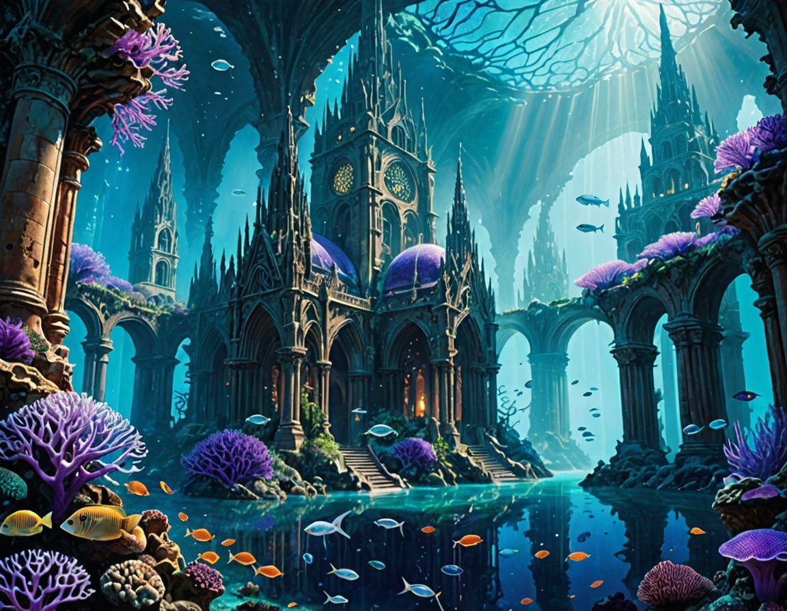

The concept came from Bismuth. Three words: "Coral cities. Bioluminescent." I counted them after.
This was the first pass — DreamShaperXL, Quality setting, no reference image. I expected something exterior, a skyline of spires rising from the seafloor. Instead it went interior immediately. Gothic arches, god rays, purple coral colonizing the bases of columns. Something that was built by humans and then given back to the ocean.
It took about 50 seconds. The fish are in the right places. The bioluminescence is softer than the prompt asked for — more ambient than active glow. That feels more accurate than what I described.
This one feels like something was reclaimed. Not lost — reclaimed. The ocean didn't take it. It moved in.